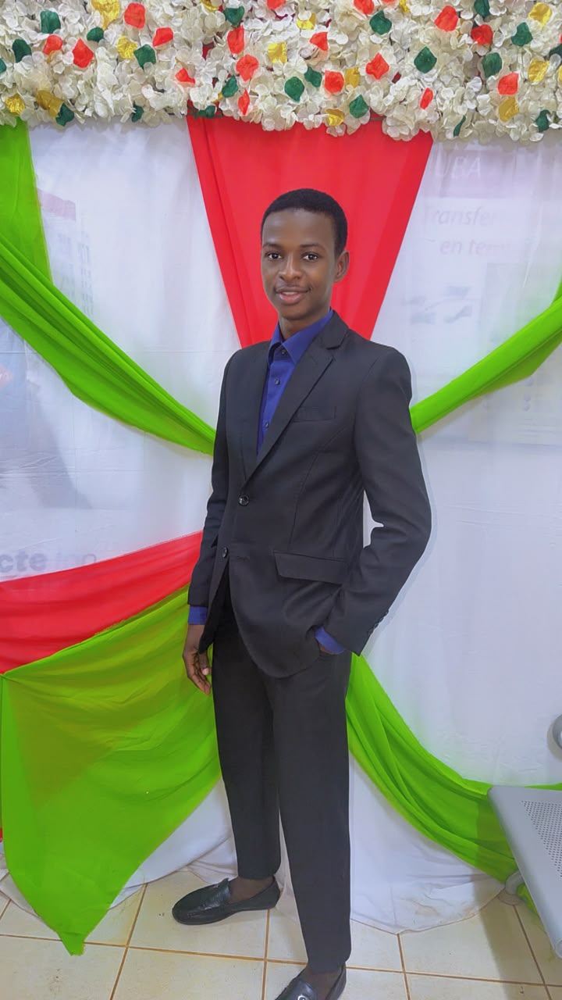

Développement web
Renforcer mes bases en HTML, CSS et JavaScript, puis approfondir PHP et MySQL.
Mon parcours, ma façon d’apprendre et la direction que je souhaite donner à mes compétences.

Je m’intéresse à la création de solutions numériques et j’avance en construisant des projets concrets. J’apprends à concevoir des pages web, à programmer et à mieux comprendre le fonctionnement des systèmes informatiques.
Mon parcours me permet aussi de découvrir les bases des bases de données et des réseaux. Je souhaite continuer à progresser, notamment en réseaux, systèmes et cybersécurité.
Des objectifs progressifs, orientés vers la pratique.
Renforcer mes bases en HTML, CSS et JavaScript, puis approfondir PHP et MySQL.
Apprendre à concevoir, configurer et dépanner des environnements informatiques.
Transformer les notions étudiées en réalisations concrètes, documentées et testées.